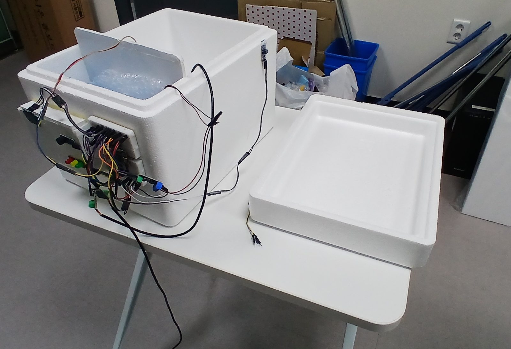

딸기는 수확한 뒤에도
밭의 열을 품고 있어요.
작은 농가는 큰 예냉 설비를 두기 어려워요.
1시간식히기 시작해야 하는 시간
1℃목표 온도
20%냉각이 2시간 늦을 때 잃는 상품성
출처: 캐나다 온타리오 농식품부(OMAFRA), Mitchell 외(1996)
직접 만든 시제품

넣고, 닫으면, 알아서 식혀요.
-
1. 감지
온도와 뚜껑을 재요
온도센서 2개와 리드스위치
-
2. 예측
1시간 안에 식을지 미리 알아요
AI가 1℃까지 남은 시간을 계산
-
3. 행동
바로 식히고 알려요
댐퍼와 팬으로 냉기 순환, 신호등·OLED·부저로 알림
1℃까지 몇 분 남았는지,
AI가 미리 알려 줘요.
아이스팩이 녹아 냉기가 약해지는 변화까지 기록에서 배워요.
- 초록: 완료
- 노랑: 식히는 중
- 빨강: 늦을 위험
무엇이 다를까
들고 다니는 크기
아이스박스 하나로 밭에서 바로 써요.
식히기와 기록을 한 번에
식히면서 30초마다 온도를 기록해요.
남은 시간을 알려 줘요
지금 온도가 아니라 다 식을 때까지 남은 시간을 보여 줘요.
AI와 계산식을 비교해요
직선 추세, 뉴턴 냉각 법칙, AI를 같은 기록으로 비교해요.
판단은 사람이 해요.
- 예측은 참고용이고, 출하 판단은 농가가 해요.
- 센서가 고장 나면 "측정 불가"로 표시하고 팬을 멈춰요.
- 0℃ 아래로 내려가면 팬을 꺼서 얼지 않게 해요.
- 개인정보는 모으지 않아요.
버려지는 딸기를 줄여요.
SDG 12
지속가능한 소비와 생산. 무르고 상해 버려지는 딸기를 줄여요.
SDG 2
기아 종식. 작은 농가가 제값을 받게 도와요.
사양
| 부품 | 역할 |
|---|---|
| ESP32 보드 | 예측과 제어 |
| 나사단자 확장보드 | 선 고정 |
| DS18B20 방수 온도센서 ×2 | 온도 측정 |
| SG90 서보 + 폼보드 댐퍼 | 냉기실 창 여닫기 |
| 5V 쿨링팬 + MOSFET 모듈 | 냉기 순환 |
| OLED, 신호등 LED, 부저 | 알림 |
| 리드스위치 모듈 + 자석 | 뚜껑 열림 감지 |
| 스티로폼 상자, 아이스팩 | 본체와 냉기 공급 |
| 폼보드 칸막이, 뽁뽁이(에어캡) | 칸 나누기, 단열 |
| 탐침형 디지털 온도계 | 센서 보정 |